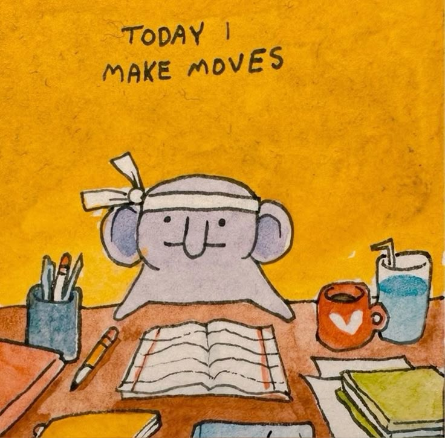
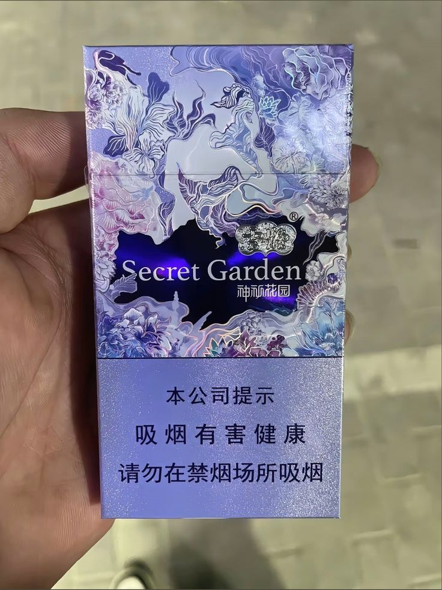
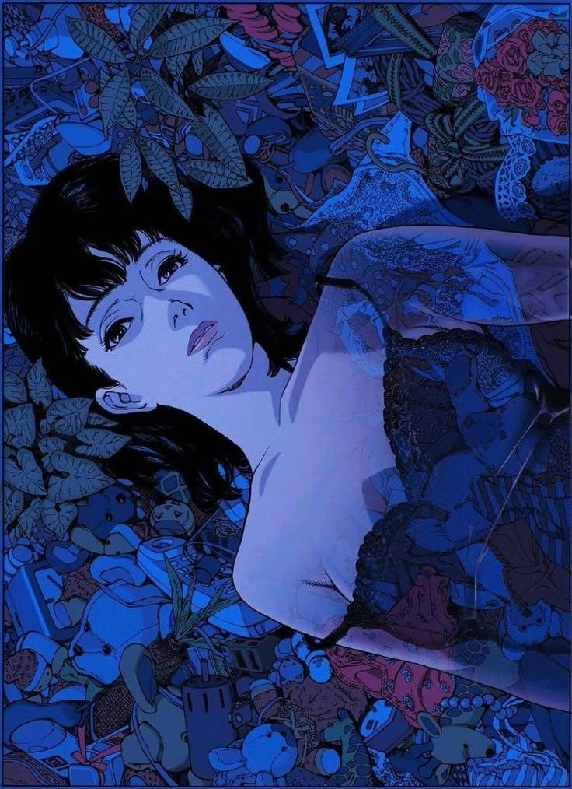
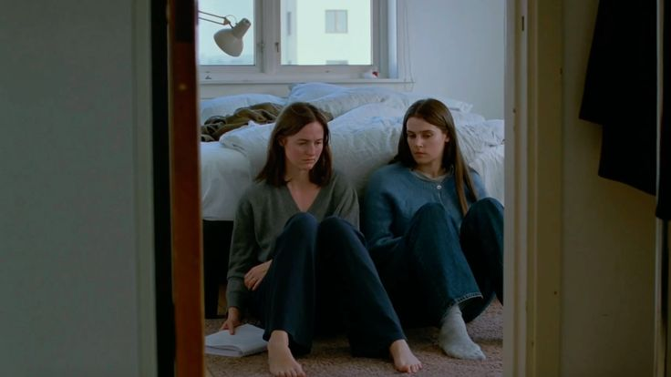

Mi vida ha encontrado su razón en tu ausencia.
Siempre he sido muy necio con las cosas. De la impaciencia, flojera, cortar esquinas hipotenúsicas, un factor en común en mi vida es ver qué puedo adelantar, y si puedo adelantar un poco más. Esta línea de pensamientos se termina de abarrotar en el alma como un desollador de esencia. Comerte la cáscara de la naranja. Quedarte en la cama tirado porque hay ganas de ir al baño, con el sueño de querer dormir. Te quedas sin dormir, con las ganas, el sueño, y en el estómago una cáscara. Entro por la salida, salgo por la entrada. Creo recordar haberte dicho que me cuesta menos tomar decisiones por descarte, pues la terquedad es mi naturaleza y se me hace más sencillo aferrar que decidir.
La compañía de un ser querido es un buen refrescador de lentes. Por más desorden, ofuscación intelectual que pueda una persona pintar, no hay otro camino de aquello que se trata de escapar con frecuencia: requerimos compañía y amor. Sea en otra persona real o en una grave alteración mental. Me tocó la primera, creo yo.
Me consideras muy social, lo cual aprecio, aunque siempre pasaba de largo en generar una seria introspección al respecto. Quizá por supervivencia, la mayoría de mi reflejo se ha basado en gestionar daños colaterales y conflictos de mi infancia y adolescencia, pero no sobre mí más allá de las falencias gestativas. De esto, se podría entonces apreciar el espacio negativo en la psiquis, un lugar sin florecer.

De ser que la naturaleza sea heredada, aún aquí ya era malo para tomar un camino. Por lo que para la
pregunta adecuarse a mí seria:
¿Quién no quieres ser?
De conversar y crear conexión, me inclino a intentar compaginar intereses. En ver una serie que a la otra persona le gusta, por ejemplo. O decirle a la persona que por favor no elimine sus ensayos académicos y me los envíe para leerlos. Y si hay algo de lo que estoy seguro, es que valoro mucho la conexión humana. La Martina encontró su decisión en su temprana edad, y yo años después al conocerte: no encuentro el sentido de una vida solitaria.
Me he rendido a mi incapacidad de comerme el anzuelo de la originalidad, aquel superhombre hecho a mano, de obras grandiosas exclusivamente únicas, de grandes descubrimientos donde no hay autor sino él. Soy amalgama del mundo, y hasta la forma en la que saludo es influencia. Por todo, estoy en la vida para compartir. Si me ves comentándote lo primero que piense, es el núcleo de mi existencia, el efecto colateral de que me levante otro día y pase otro día. No solía considerar mucho lo heredado, que una persona tenga predisposiciones por encima de su control, pero al parecer he encontrado algunas propias en escribir esto. Colonización del "yo", como tú lo has llamado. Soy un pou social.
De a poco he encontrado mi lugar. Y me toca darle la razón a los viejos: el tiempo elucida y algunas veces no es sino el tiempo lo que nos falta para avanzar. Y gracias a todas las personas que he conocido en los dos últimos años, incluyéndote, he visto tanto que puede ser para mí. La crisis existencial, en efecto, se cura saliendo de la casita y viendo el mundo real.
Me costó un poco escribir esto arriesgando la pretenciosidad. Me conoces. No soy pretencioso en lo absoluto, chamullento sí, y de sobra. Pero no pretendo aquel intelectualismo de olor rancio académico. Primero porque no me gusta, segundo porque ni lo puedo hacer. Mis palabras son suaves al ojo y, si Dios quiere, con sustancia.

Partiendo de qué no me gusta, puedo entonces explorar el resto del mundo. Ver qué me gusta. Qué aprecio. Pero por sobre todo, en qué me terquifico y defiendo. En el último año he empezado a desarrollar más el sentir de no dejarme pisar sobre aquello que me gusta. Y era algo que solía hacer, especialmente si se trataba de compatibilizar con las personas y agradarle a quien quisiera. Pero cómo equivocarse tanto.
Le debo por valores respeto a mis amistades, seres queridos, e incluso enemigos. Aunque los cimientos de esta declaración sean débiles, pues no te sorprenda que en una semana cualquiera, en un momento del día cualquiera, vaya y le desee la muerte a un desconocido que me caiga mal. Supongo que es natural el odio - o al menos algo que pienso. Algo que deseo. Si alguien me cae mal, pido su muerte. ¿Será tan malo? Mi abuela me decía que a nadie se le debía desear la muerte, ni siquiera a dictadores ni personas horribles en el mundo. Pero por más que sea, siempre lo terminaba haciendo. Y nadie se ha muerto, por ahora. Bueno, sí, una persona. O dos. Un cliente de la boti que me caía mal, a los tres días se murió. Y el viejo de la boti. No era mala persona quizá para sus años anteriores, pero en mi contexto me tocó un viejo con diabetes, ludópata, amante necrótico del dinero, irrespetuoso, desconsiderado, vil y aweonao. Qué bueno que se haya muerto el viejo. Ese día salí tres horas antes de mi trabajo de 59-60 horas a la semana. Que también se muera su hija, atorrante sicofanta.
Nótese que el párrafo anterior empezó por "respeto a (...), e incluso enemigos". Pero sí, me caen mal las personas malas. ¿Viste que sí he pensado en lo que no me gusta? Retomando:
Me gusta realmente lo que me gusta, aunque al otro no le guste. Triste es que la autenticidad me deba llegar a tan tardía edad, ¿pero qué más da? Que me llegue a los 21 años el sostener con fuerza aquello que me llame, mejor que a los 30. Que pueda decir que fumo aunque la familia no le guste la idea. Que me guste aquello que mis alrededores les disguste, que me disguste lo que les guste. Aquella serie. Aquel libro. Aquella película. Expresar aquello incompatible con mis seres queridos. ¿Cuánto me ha costado a mi alma el suavizar las diferencias, por temor a la incompetencia del otro, cuando incluso un tardío weón con las mínimas voluntades puede adecuarse? Una falta de respeto para ambos: en mí que me permito daño, en el otro porque indirectamente lo veo como un intolerante infantil.
El aspecto social del mundo es sencillo, y uno se adapta a los demás. Es más, tengo la verdad absoluta. Sí, usaré mi privilegio de hombre para no considerar el resto de la humanidad como humanos individuales, de potencial facultad cognitiva similar a la mía, de emociones complejas e historias diversas a la mía, porque puedo. Y usaré esa verdad absoluta para ejercer mi declaración:

Qué película tan fome.
Retomando: antes si alguien me pisaba lo que me gustaba, era dejarlo pasar. Como buen centrista, nunca me
adherí a algo. No luchaba por lo mío. Como buen periodista neutro, observador de quien sea, sólo pensaba en
escuchar las palabras del mundo y dejarlas fluir. Y es bonita la historia del permanente observador, ¿no?
Aquel anónimo transeúnte que observa, analiza, y sigue con su vida. Pero la vida se hace tan gris cuando no
puedes dar tu pincelada al mundo que tus ojos trabajan tanto por mostrarte. Lindo el Parque Bustamante.
¿Pero qué gracia tiene irme al
parque, encontrar raperos, y negarme a hacer freestyle con ellos? ¿Has visto aquellos estadios de fútbol?
Imagínate que no hubiesen fanáticos, ni jugadores. Imagínate aquellos cines sin espectadores. Obras sin
ojos. La cáscara hermosa, ¿pero dónde hur hur está la naranja?
Que venga ácida, que venga dulce. Pero que venga. Pero tenemos la obligación, para aquel humano que quiera
ver un gran
mundo, de poner un poco de nuestra sangre y nuestra piel. ¿Por qué te alegrará tanto ir a Santiago? Pero
cómo no. Mundo de stickers, de
graffitis, comunidades vivas de distinta fauna y cantos. Me quiero hacer un tatuaje en el brazo. Y quiero
fumar cigarros asiáticos. Y quiero hacerlo, contigo.
Importante las comas.
Hablando de películas fomes y que puedan vincularse a mi sentir:

Me he cansado de lo "post-". Me he cansado del "meta-". Conservadurismo puro de aquello que me alimente el alma y rechazo lo Perfect Blue y estos films con ligereza de la vida. No recuerdo si te dije cuando veíamos la película, pero detestaba lo frío que son - factor común en esas películas - con ellos mismos. Mi corazón latino no aguanta el silencio nórdico. Con razón tienen esa tasa de depresión/soledad juxtapuesta (ooo ¿viste cómo usé la palabra? ni la googlié para ver si estaba bien puesta) con sus estudios con cifras altas culiás de felicidad e independencia. Lo que sé que te he dicho: estoy orgullosamente lo suficiente cagado de la cabeza como para no soportar la vida de estos seres de desconexión total. ¿Cómo vivir una vida donde se saluda con el "adiós"? ¿A quién abrazas si todos se están yendo? ¿Dónde está el puño, el ejercicio de la vida por sobre la frialdad de la distancia? Este tipo de películas tienen un impacto en la vida como lo tienen las hojas del árbol ignorado que caen en la roca que atención le dio nadie. Y fíjate que hasta no hace mucho igual me gustaban. Donde no pasa nada, donde el café se toma y al estómago se va, donde el dinero transacciona un objeto, donde la hoja y lápiz ajustan la finanza, y la cama es el apoyo para quienes duermen. El mundo donde hay qué, y no porqué. Pero cuando la vida se pone difícil, ¿qué le responderás a tu corazón? ¿Que después de la montaña por escalar, sólo hay otra montaña? ¿O que hay un mundo donde árboles te oxigenan, la comida te engendra gustos, el sol te abraza, el animal te acompaña y el amigo te asegura? Viva la vida con vida.
Errata: era "yuxtapuesta". No "juxtapuesta". El inglés... Pero por hilarante no lo cambio. Usé una palabra complicada. Soy todo un académico, un intelectual. Ou yea. Hablando al respecto,¿Cómo será leer aquellos pensadores, intelectuales, etc., que intencionalmente hacen sus textos ofuscados? No puedo imaginarme ser un estudiante de Filosofía y tener que leer lo abstracto de Hegel. Tenía un amigo en la media, de dos años adelante de mí, que desde siempre le gustaban aquellos temas. Siempre citaba a los autores. Vinculaba las ideas de aquellos sobre su vida, o experiencias que escuche. Recuerdo que una vez me prestó un libro de Psicoanális, de esos libros tapa dura y de textura rugosa antigua, por curiosidad le dije que me lo prestara. Daniela, vete a saber qué iba a obtener del libro. Unas veinte páginas en él, tenía yo tan poco conocimiento base que no le saqué nada de provecho. Se lo devolví al final. Su padre era ávido lector, por lo que recuerdo. Libros heredados, gustos musicales heredados, mundo heredado. Ligera envidia me causa, no recuerdo a mi papá leyendo ni escribiendo alguna vez. Quizá sabía, pero simplemente no le vi ejercer. Recuerdo haber tenido una época de anti-intelectualismo porque el grupo de amigos de aquella persona era como malo. Y entonces pensaba que si el acceso a la cultura no permitía un gran salto en carácter civíl, una mejora de calidad como persona, no debe ser entonces tan fructífera aquellas lecturas más que por la brecha de conocimiento para acceder a esos libros. No hay correlación al final del día, ahora lo sé, pero así me sentía en su momento. Tenía una amistad (o varias) que concordaban conmigo, así que entre la razón colectiva me dejé llevar. Y así, otra persona más termina menospreciando las humanidades, por una simple aflicción personal... Nada que hacer. ¿Por qué ser una persona de paupérrimo valor comunitario cuando quizá has leído sobre el Eterno Retorno de Nietzsche? ¿Piensas ser así por siempre? Buuuuuuuuuu. Nada que ver. Pero tenía que ver para mí. En todo caso, puedes imaginarte para estudiantes de Media lo que represente vincularse a esos grupos, en contexto de todos adolescentes y tontos. Eras la élite intelectual del liceo por juntarte con esas gentes. Hasta a mí que de repente me veían con él, por el puro producto de ser muy social, me terminaban estimando en más. Ni hablar de cuando entré en MUN. Eso del modelo de las naciones unidas. En volá me sentí importante, pero cuando entré en las sesiones no tenía ninguna habilidad argumentativa, como quizá la tenga ahora. Me era imposible chamullar, mi único fuerte era la tecnología. ¡Cómo hablo tanto! Me retiro.
Creo que será todo por esta entrada. Lo que te comparto para este día tuyo breve, un viernes abril 17. Dos
días para nuestro cumplemes número ocho. Seis novenos de año juntos. Quería que vieras lo mucho que disfruto
la vida, aunque la inicial
melancolía de mis palabras te puedan engañar al principio. No será así ni jamás. Tengo la llama en el alma
que observas cada día que te abrazo, te beso, te digo que estás hermosa, y te invito al café y al amor.
Abrázame, mi vida, que te vivo con ganas.
Muak, muak.